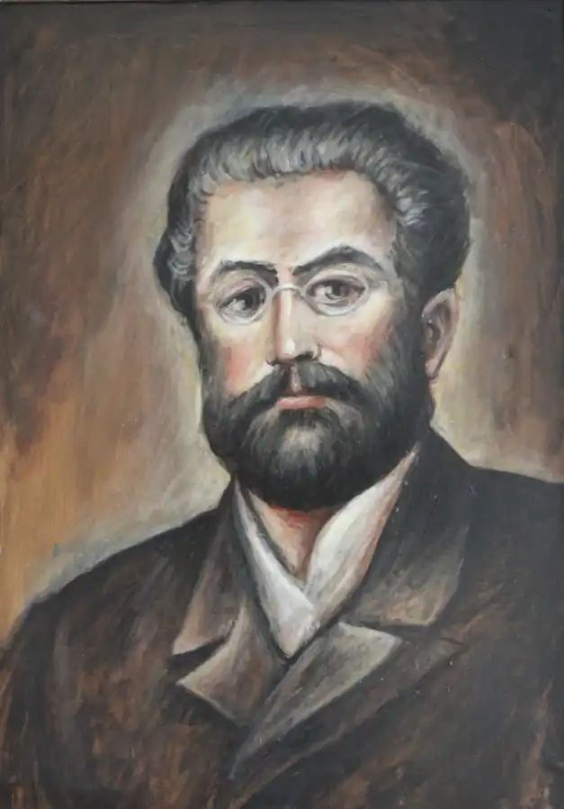
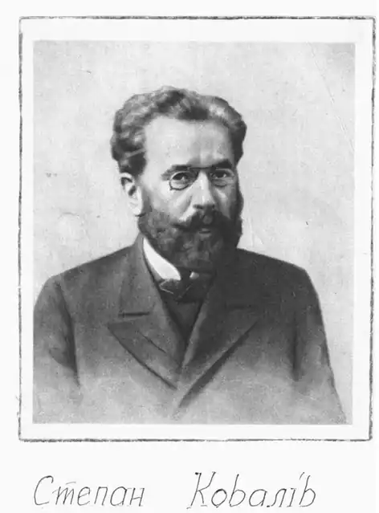

Народився Степан Ковалів 25 грудня 1848р. в селі Брониця. Початкову освіту здобував у рідному селі, а потім навчався у Дрогобичі в тій самій школі де пізніше через чотири роки навчався Іван Франко.
Після закінчення цієї школи він далі вчився у нищій реальній школі в Перемишлі, яку на четвертому році змушений був залишити і піти вчителювати. Вчителює в Сарнах, Таргановичах в Городищі Самбірського повіту, а пізніше у своєму рідному селі. Співає в церковному хорі. Про перші кроки Коваліва –педагога дізналися із його листа до Осипа Маковея 1900р. "Був вчителем в Таргановичах, Городищі, Брониці, всюди мене любили, і я любив усіх, і лишив по собі велику пам’ять". (С. Ковалів. Твори, К.1958р, стр.5).
Його син Юліан потім згадував, що під час учителювання батька в Сарнах, селяни дуже радо посилали дітей до школи приходили діти навіть з далеких хуторів, приносили їх на декілька днів, ввечері пекли картоплю у "професора" і ночували у школі. ( Ю. С. Ковалів. "Спогади про Степана Коваліва", Львів 1952р.,стр.24) Ці факти послужили матеріалом для написання оповідання "Вечірня наука при печених картоплях". Молодий вчитель робив все для того, щоби навчити грамоти сільську молодь. За час трирічної роботи виявив талант педагога. Позичив трохи грошей і вирушив до Львова, вступати до вчительської семінарії.Одночасно давав приватні уроки. В 1875р. він блискуче закінчив семінарію, одержав диплом І-ступеня.Знову працює в рідному селі. На цей час померла його мати і йому як старшому синові, треба було піклуватися про молодших братів, допомагати батькові утримувати сім’ю. У Брониці він з усією силою віддається улюбленій справі, домагається, щоби в селі була побудована нова школа. Щоб залучити більше дітей, навчання проводив у кілька змін. У декого це викликало незадоволення і вони хотіли спалити школу.Про це пише в оповіданні "Грім". "Я раз сказав,щоби поставити школу, то мене мало не вбили..." (Журнал "Дзвін"№7-8,1992р.,стр. 132) Осип Маковей у статті "Стефан Ковалів", описуючи цей період в житті педагога, також зазначає, що за чотири роки вчителювання в селі, його заходами поставлено там гарний будинок шкільний, але в нім Ковалів, довго не пробув, мусів в 1879р. покинути село і та школа залишилася пусткою. (Степан Ковалів. Твори. Київ 1958р.,стр.5) Пізніше в 1879 р. ті самі "вороги" просили, щоб залишився в селі. Однак в 1879 р. його було призначено директором великої народної школи в Бориславі, в якій пропрацював 40 років. Ковалів постійно шукав нових ефективних засобів навчання, щоби наблизити школу до життя, і дати молоді найбільш потрібні їм знання. Багато уваги приділяє унаочненню, створює в школі куток живої природи, налагоджує роботу невеликої майстерні, де учні самі виготовляли прилади і устаткування для хімічних і фізичних дослідів. Руками вчителя і його учнів були створені і добре обладнані фізична і хімічна лабораторії. У шкільній практиці широко запроваджував екскурсії з дітьми в гори, ліс, до річки, на промислові підприємства. Цим пробуджував інтерес до оточуючого і їх спостережливість. Особливим успіхом в учнів користувалися його уроки з природознавства і арифметики. Великого значення надавав вивченню дітьми художніх текстів, зокрема віршів Шевченка, Глібова. В Бориславі в 1881р. розпочав свою літературну творчість. В автобіографічному листі до Маковея в 1900р. С.Ковалів так пояснює причини, що спонукали його до письменницької діяльності після переїзду до Борислава. "Тут я побачив дива, яких до сеї пори не лучалось мені видіти, стрічався з різнонародними заграничними людьми з Америки, навіть з Австралії, бачив нужду беззащитного народу і кричати не міг: "За що б’єш..." і почав писати ". ( Степан Ковалів. Твори, стр.8) Свої твори друкував у різних журналах і газетах підписуючи псевдонімами: Дроздишин, Дрозд, Плескачка, Степан Пятка. ( Степан Ковалів. Твори, стр.8) У 80-ті роки Степан Ковалів публікує переважно педагогічні статті, метод розробки з арифметики і природознавства та декілька оповідань для дітей. Великий вплив на Коваліва письменника мала дружба з І.Франком. Між письменниками, які часто зустрічалися, завязується і творче співробітництво. Великий Каменяр часто бував у домі Ковалівих. Разом ходили на нафтопромисли, Франко слухав його нові оповідання і багато говорили про життя бориславських робітників. Як згадує Юліан Ковалів Франко часто сідав за батьків стіл і вів щиру розмову "Ну, покажи, Степане, що тем маєш нового?...і батько читав нові оповідання, які записував у зошитах каліграфічним почерком.Читаючи свої твори, він дуже переживав, давав окремі пояснення. Часто Франко так зацікавлювався описаними подіями, що обидва йшли на місце, де траплялося описана подія". (С.Ковалів.твори,стр.9) Франко присвятив Коваліву оповідання "Довбанюк", а в збірці "3 вершин і низин" згадує як заїхав до Степана Пятки. С.Ковалів присвятив і Франку оповідання "Мудріють люди", а також статтю "Продукція нафти в Бориславі". Франко допомагав Коваліву друкувати його твори. За три десятки років літературної діяльності С.Ковалів написав 112 оповідань і нарисів, 40 педагогічних статей і методрозробок. Свої твори надсилав до галицьких і буковинських газет і журналів "Буковина", "Діло". "Батьківщина", "Дзвінок". Багато уваги приділяв зображенню життя галицького села. Основні його твори на цю тему: "Ліси і пасовиська", "Пятка", "Олекса щупак", "Конокради", та інші. Ковалів перший з українських письменників відгукнувся на заклик Каменяра про необхідність глибокого вивчення життя бориславських робітників. Ніхто із українських письменників після Франка так широко не показав цих процесів, які відбувалися у Бориславі і навколишніх селах, як його учень С.Ковалів. В багатьох оповіданнях подає правдиву історію перетворення маленького підгірського села Борислава у велике промислове місто. Цій темі присвятив оповідання: "Сорокаті штани", "Хто винен?", "Чічі", "Котюзі по заслузі" В творах на педагогічну тему зумів правдиво показати жалюгідний стан освіти в Галичині в кінці ХІХст.. Цісарський уряд зовсім не дбав про освіту. Шкільні приміщення були в жахливому стані, вчителі одержували мізерну платню і бідували, а прогресивні вчителі переслідувались. В творах на педагогічну тему: "На Дрімайловім пустирищу", "Прогулянка верхи", "3 книги мира", "В останній лавці", "Не зварені яблука", "Додержали тайну"-відобразив важке становище народного вчителя, умови, в яких вони працювали. "Перероблена сільська хата, шопа, стайня, стодола та тісні шкільні кімнатки, в яких вчилися діти". ("На Дрімайловім пустирищі" С.Ковалів твори, стр.651) Ковалів добре знав життя дітей робітників. Він перший з українських письменників описує їх життя та працю на бориславських нафтопромислах. В оповіданнях "Суєта про насущний", "Сільські звіздарі", "На прічках","Гриби" змальовує життя галицьких дітей. "Годі до школи ходити, як нема хліба в хаті і огортки на тілі". ("Суєта про насущний" твори стр.555) Помер С.Ковалів 26 червня 1920року, похований у Бориславі. На його похорон прийшли друзі, учні, все населення Борислава, селяни з навколишніх сіл. На памятнику, встановленому на могилі написано: "С.Ковалів директор від школи в м.Бориславі, український письменник, почесний член УПТ (українське педагогічне товариство). І.Франко високо оцінив його творчість: "Він належить до тих талантів, яких не постидалась би ні одна далеко багатша від нашої література"